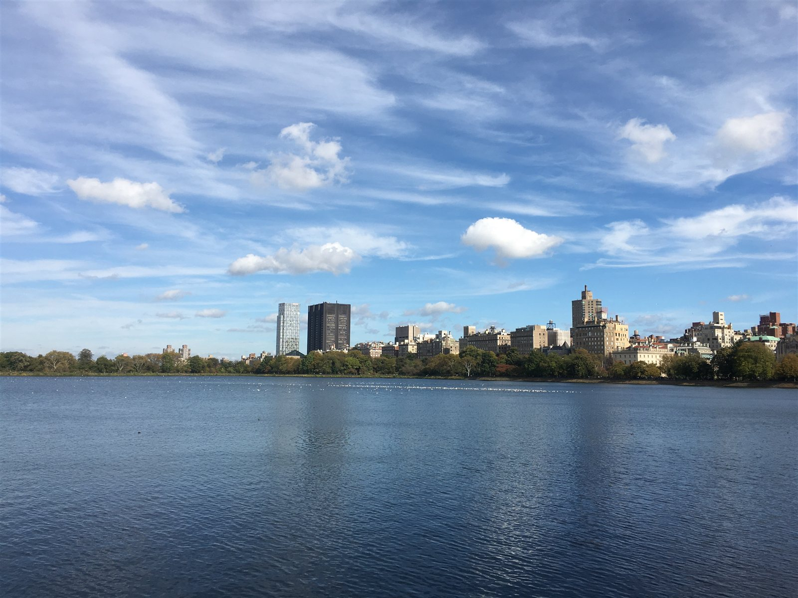
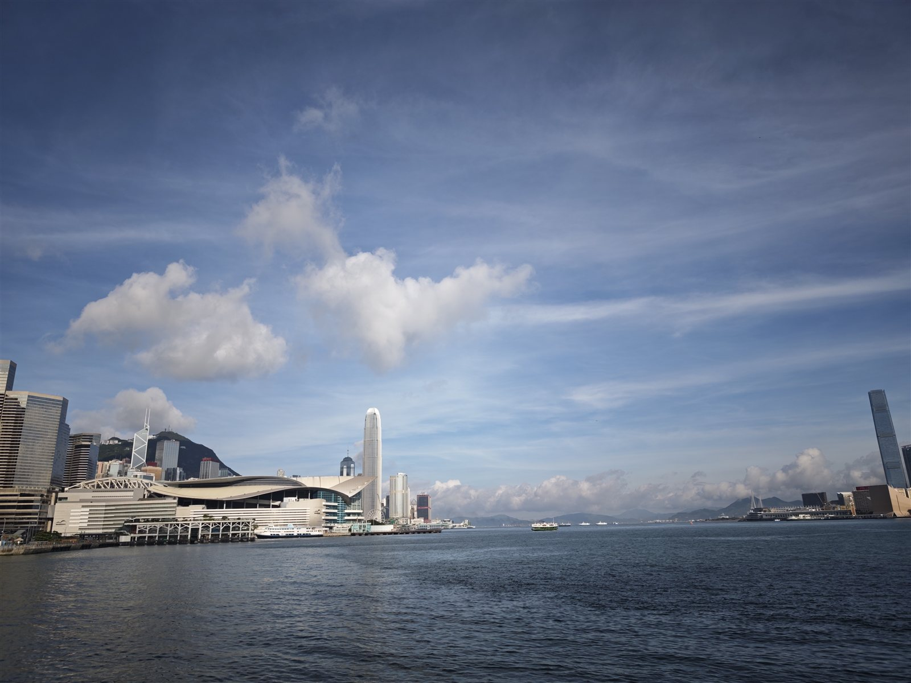
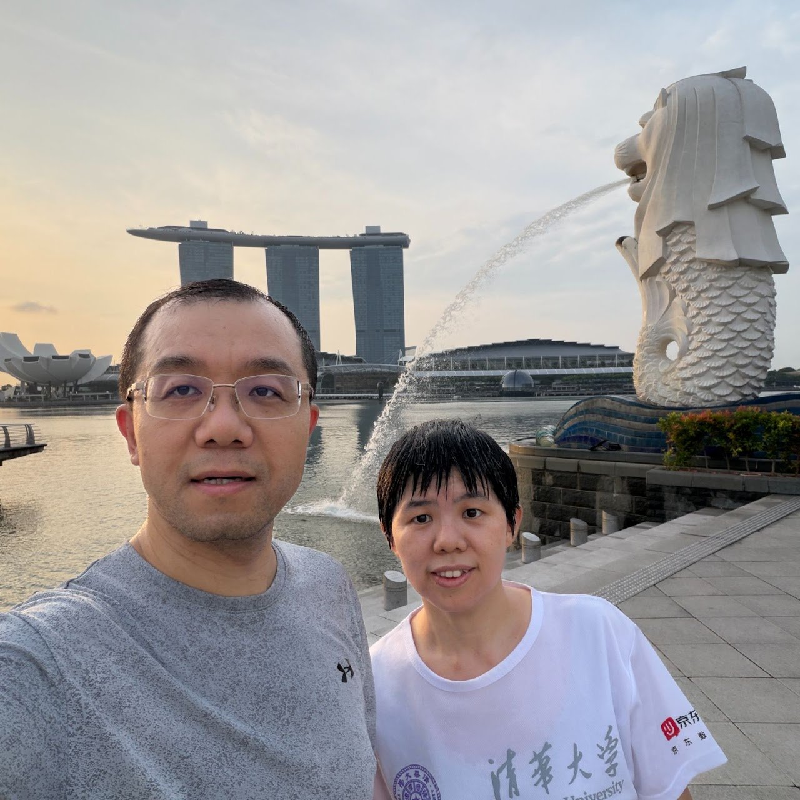
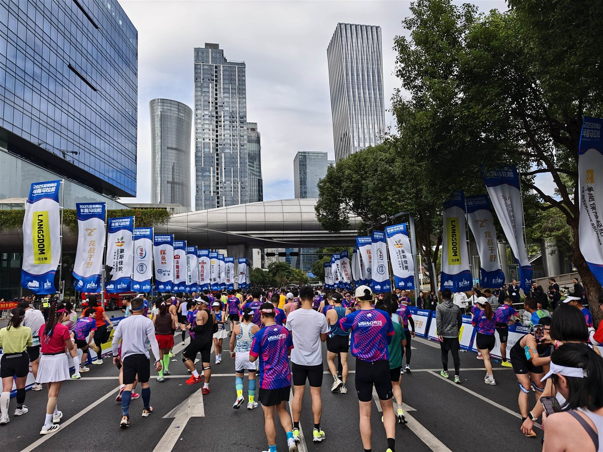
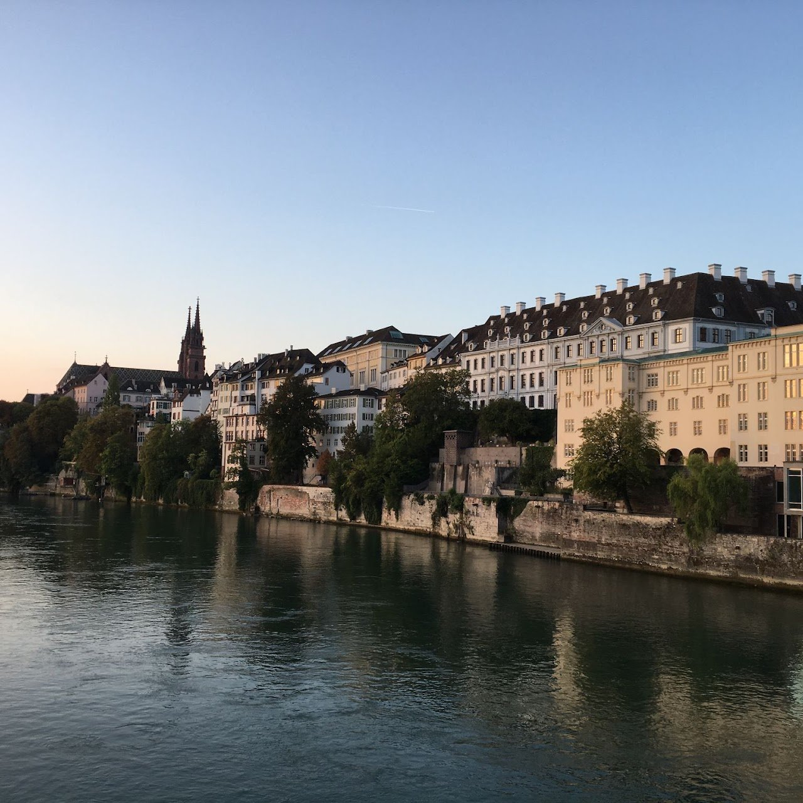
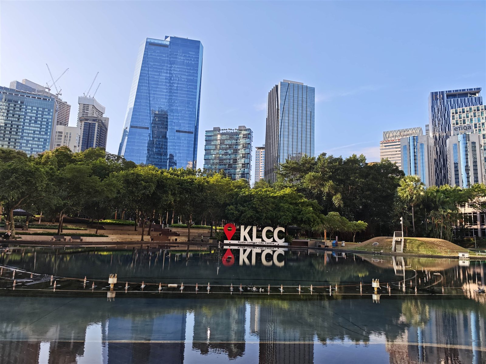
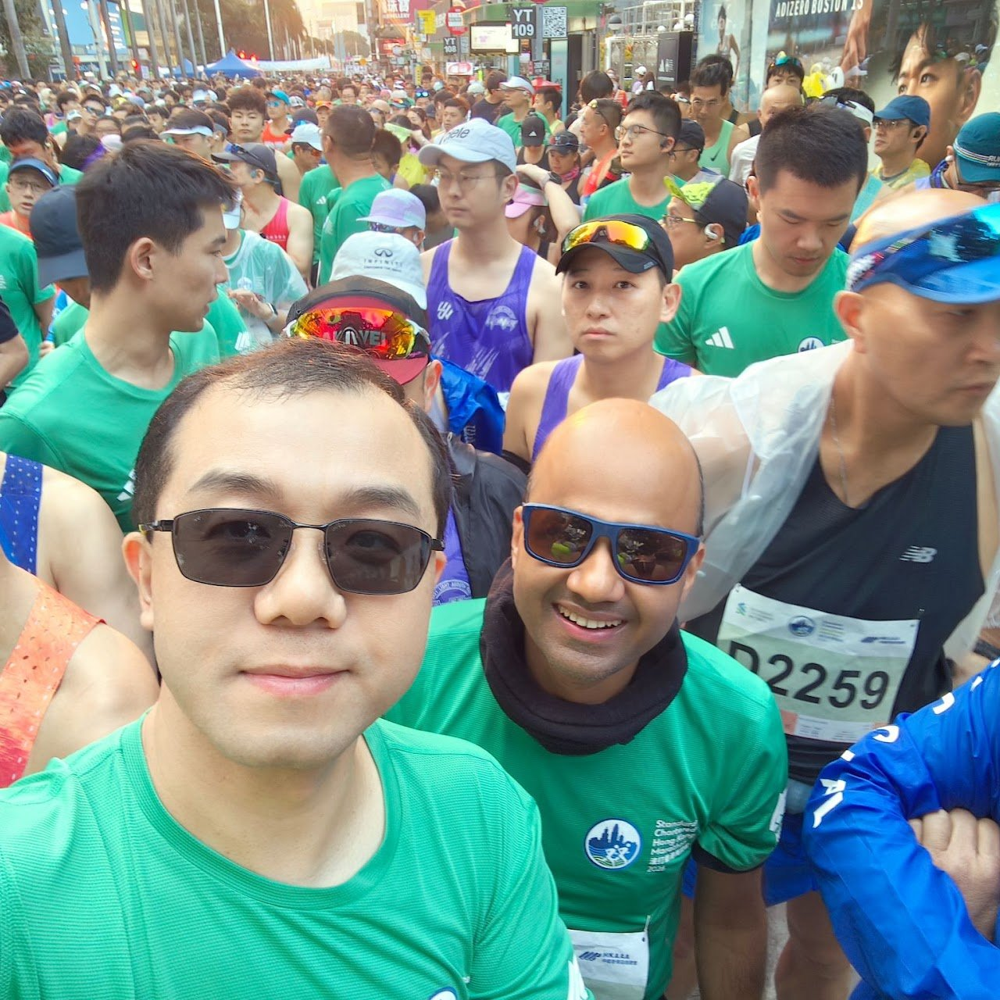
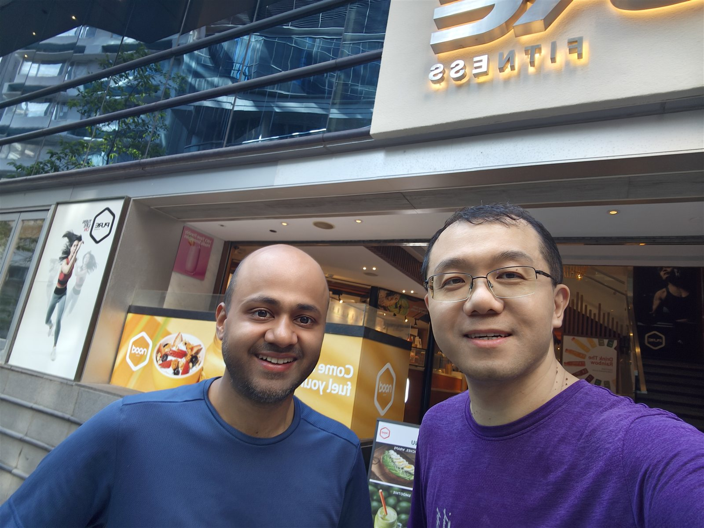
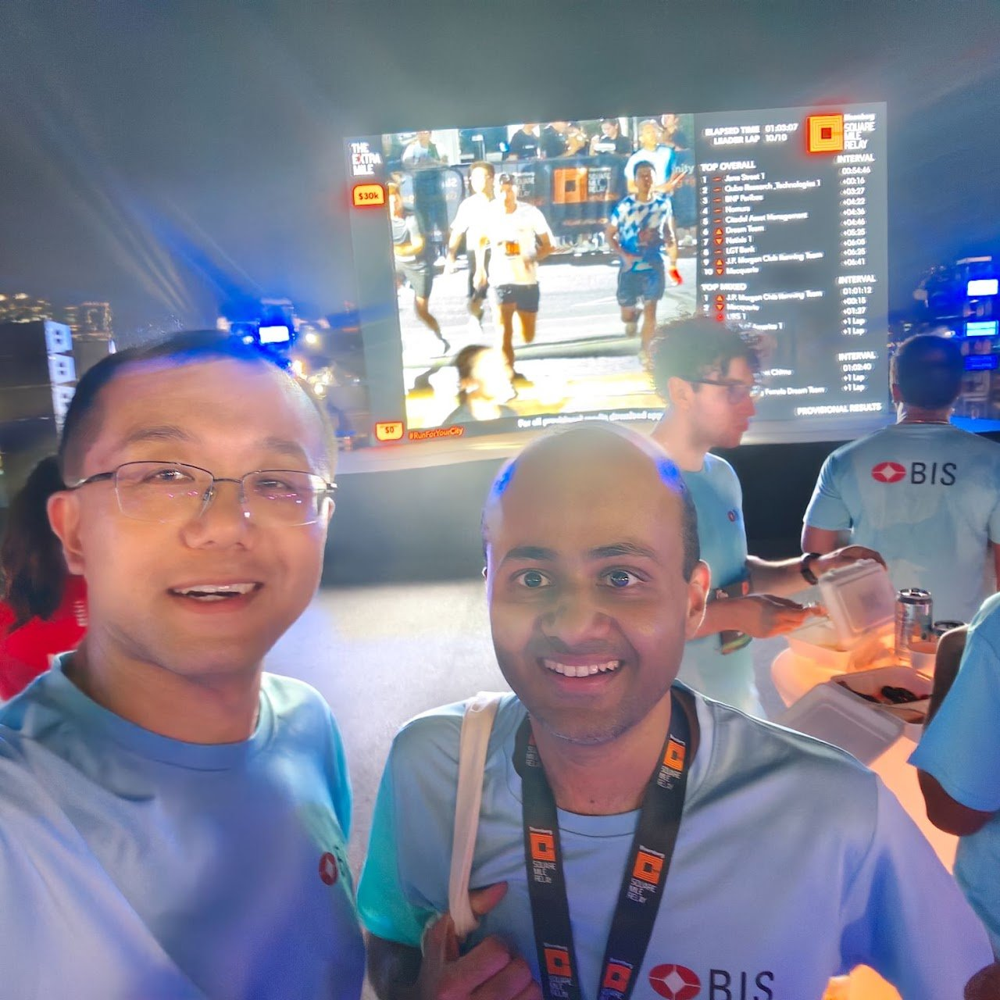

Running
I started running when I was a little boy. My mother let me run in the school yard early in the morning.
My alma mater, Tsinghua University, requires all male undergraduate students to finish 3 km (female for 1500m) in a little more than 15 minutes, just to pass. It's mandatory if you want to be eligible for a Bachelor's degree.
I ran first 5k in 2001, first 10k in 2002, and first half marathon (2:28) in 2003, all in Beijing Marathon.
Please make no mistake. I run for leisure, for fun, not for running fast/chellenging/long distance.
Hiking and running are both enjoyable. Over the years, I find running is great for exploring cities and neighbourhood. The streets, architectures, nature, cultures, and people become familiar to me by running, mostly in 10 kilometers. I have run in New York (Yes, central park, 10k/lap), Princeton, Basel, Frankfurt, Hong Kong, Kuala Lumpur, Singapore, Beijing, Shanghai, Hangzhou, Qingdao, Shenzhen.






In January 2026, I ran my fifth half marathon in Hong Kong, with my friend Tirupam (2:23), on a humid Sunday morning. The up and downs along the running route, including 2 km tunnel under Victoria Harbor make the Hong Kong marathon unique experience. We have trained together since last year and run along. His intermittent half-hour wait in the race and encouragement are the key that I could finish the race 5 minutes faster than my first half marathon. Together we explored many parts of the beautiful Hong Kong Island, well above half of its coastal line.


